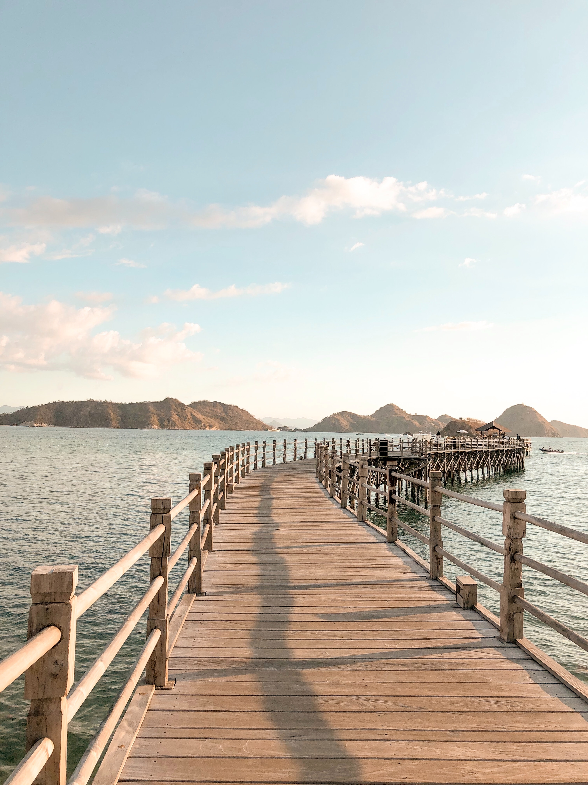

Sejarah

Fosil-fosil manusia purba seperti Homo erectus, yang oleh antropolog juga dijuluki "Manusia Jawa",
menimbulkan dugaan bahwa kepulauan Indonesia telah mulai berpenghuni pada antara dua juta sampai
500.000 tahun yang lalu. Namun kebenaran tentang hal ini banyak diperdebatkan.
Dari 110.000 hingga 12.000 tahun yang lalu, daratan Nusantara bagian barat (kira-kira kepulauan
sebelah barat termasuk Sumatra, Jawa, dan Kalimantan sekarang) masih menyatu dengan daratan utama
Asia, membentuk Sundaland. Dalam periode tersebut, tepatnya sekitar 74000 ribu tahun yang lalu,
terjadi erupsi Gunung Toba yang disebut-sebut sebagai salah satu letusan gunung api terbesar
sepanjang sejarah yang menyebabkan perubahan iklim yang dikatakan hampir memusnahkan populasi
manusia modern saat itu. Umat manusia sendiri sebenarnya belum sampai ke Sumatra, gelombang migrasi
dari Afrika ikut terhenti untuk sementara akibat erupsi ini. Gunung Toba kemudian tenggelam dan
kalderanya membentuk sebuah danau besar dengan nama yang sama.
Sekitar 60.000 tahun yang lalu, gelombang migrasi pertama manusia yang menjadi nenek moyang ras
Melanesia sampai di dataran Nusantara. Berakhirnya zaman es pada awal zaman Holosen (12.000 tahun
Sebelum Masehi) menyebabkan naiknya permukaan laut dan terpisahnya daratan-daratan Sundaland dari
daratan utama Asia, lalu terpecah hingga membentuk kepulauan Nusantara seperti sekarang ini.
Kejadian-kejadian tersebut menjadi pemicu terjadinya diaspora manusia.
Kedatangan bangsa Austronesia dari daratan Taiwan yang mulai tiba di Nusantara sekitar 3500 hingga
2000 SM menyebabkan bangsa Melanesia yang telah ada lebih dahulu di sana terdesak ke wilayah-wilayah
yang jauh di timur kepulauan, meskipun ada sebagian yang berasimilasi/akulturasi dengan pendatang
tersebut. Dengan kondisi tanah vulkanis yang subur, melimpahnya keanekaragaman hayati, ditambah
dengan kemampuan bercocok tanam yang dimiliki manusia saat itu menyebabkan kegiatan pertanian dan
pemukiman mulai terbentuk dan berkembang pesat.
Geografis

Secara tektonik, sebagian besar wilayah Indonesia sangat tidak stabil karena lokasinya menjadi
pertemuan dari beberapa lempeng tektonik, seperti lempeng Indo-Australia, Lempeng Pasifik, dan
Lempeng Eurasia. Negara ini terletak di Cincin Api Pasifik sehingga memiliki banyak gunung berapi
dan sering mengalami gempa bumi. Busur vulkanik berjajar mulai dari Sumatra, Jawa, Bali dan Nusa
Tenggara, dan kemudian ke Kepulauan Banda di Maluku hingga ke timur laut Sulawesi. Dari sekitar 400
gunung berapi, kurang lebih 130 di antaranya masih aktif.
Sebuah letusan supervulkan pada sekitar 77.000 SM yang membentuk Danau Toba dipercaya mengakibatkan
musim dingin vulkanik dan penurunan suhu dunia selama bertahun-tahun. Letusan Tambora pada tahun
1815 dan letusan Krakatau pada 1883 juga termasuk letusan gunung terbesar yang tercatat sepanjang
sejarah. Gempa bumi berdorongan besar yang berdampak ke Indonesia dan terjadi belum lama ini adalah
gempa bumi dan tsunami Samudra Hindia 2004.
Wisata
Indonesia memiliki banyak objek wisata yang eksotis dan bahkan menjadi destinasi wisata dunia.
Keindahan wisata alam Indonesia banyak memikat turis mancanegara datang hingga ke pelosok Indonesia.
Mulai dari wisata pantai, taman nasional, hingga desa adat masing-masing memiliki daya tarik
tersendiri bagi wisatawan. Simak artikel berikut tentang daftar objek wisata Indonesia yang
mendunia.
Raja Ampat

Raja Ampat merupakan salah satu objek wisata Indonesia yang mendunia dan diakui Unesco.
Keindahan pemandangan bawah lautnya menjadi daya tarik utama Pulau yang ada di ujung timur
Indonesia ini.
Dilansir dari situs Unesco, kecantikan Raja Ampat terletak di sebaran pulau-pulau kecil yang
berbatasan dengan air laut, teluk, dan formasi batu karst menciptakan gradiasi warna yang apik.
Raja Ampat ini terdiri dari beberapa pulau besar dan bergunung-gunung, dengan yang terbesar
yaitu Waigeo, Batanta, Salawati, dan Misool, yang dijuluki Four Kings.
Labuan Bajo

Labuan Bajo dikenal sebagai surga tersembunyi di Indonesia bagian timur. Desa ini berada di
Kecamatan Komodo, Kabupaten Manggarai Barat, Provinsi Nusa Tenggara Timur yang berbatasan dengan
Nusa Tenggara Barat dan dipisahkan Selat Sape.
Mengutip situs Kemlu, Labuan Bajo menjadi destinasi wisata super prioritas yang terkenal hingga
ke mancanegara. Keberadaan Pulau Komodo yang menjadi taman nasional telah diakui menjadi situs
warisan dunia oleh Unesco.